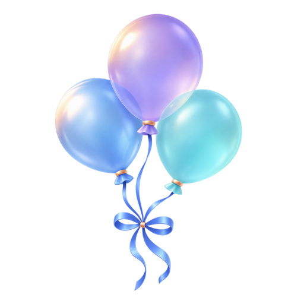
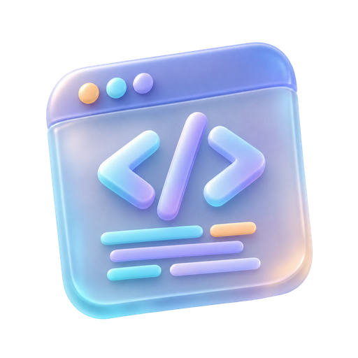
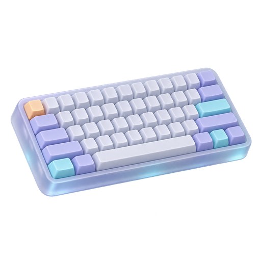

素材与动态组件库
三组 AI 主视觉、四款透明立体图标，以及独立 GIF 分隔线。概念插画不能当作现场照片使用；生成提示词和来源见各目录 manifest.json。
小素材也参与排版
气球用于活动；代码与键盘用于共创、技术主题；奖杯留给荣誉内容。按语义选用，不要求每篇全部出现。

气球
代码
键盘奖杯24 款线性 SVG / PNG 图标 →
可独立上传的动态分隔线
GIF 保留动画文件本身，需在秀米或微信上传后实测。下方默认显示静态图，点击播放；系统开启减少动态效果时保持静止。
网页中的首图浮动、背景与标题流光属于设计预览；富文本导出使用完整静态排版。折叠与组合图片如需发布，需用目标编辑器支持的组件重建。